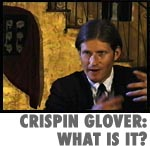
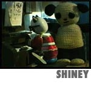
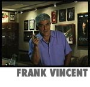

|


|
|


| Episode #25 -
Season Three
Red Bank, NJ
|
 |
Crispin Glover: What Is It?
"Back to the Future," River's Edge," a sensation on David Letterman. Doug
Stone visits the original, inimitable actor Crispin Glover at home, which
is also the set for his rather unique first directorial effort, "What Is
It?" (See the Volcanic
Eruptions Website for more info)
|
|
 |
Shiney
Based on the work first made famous by a fist fight at Sundance, it's time
for another hilarious toy adaptation. Witness the saga of a tortured
pianist whose father perhaps loved him too much. Starring our flurry
friends, created by Adam Buxton and Joe Cornish for their British "Adam
and Joe Show."
|
|
 |
Frank Vincent
Come hang out with Split Screen's favorite mob character actor, Frank
Vincent, as he tours around the neighborhood with Marylou
Tibaldo-Bongiorno smoking cigars, playing drums, getting his car washed
and talking about the old days with Joe Pesci. |
|
|
Trailer Touch-Up
We see them. We love them. Marina Zenovich sits in with James Brookman
and Rich Schmidlin as they demystify the art of trailer creation, getting
ready for the Orson Welles classic "Touch Of Evil" re-issue.
|
|
|
|
Episode #25 Credits
|
|
|
|